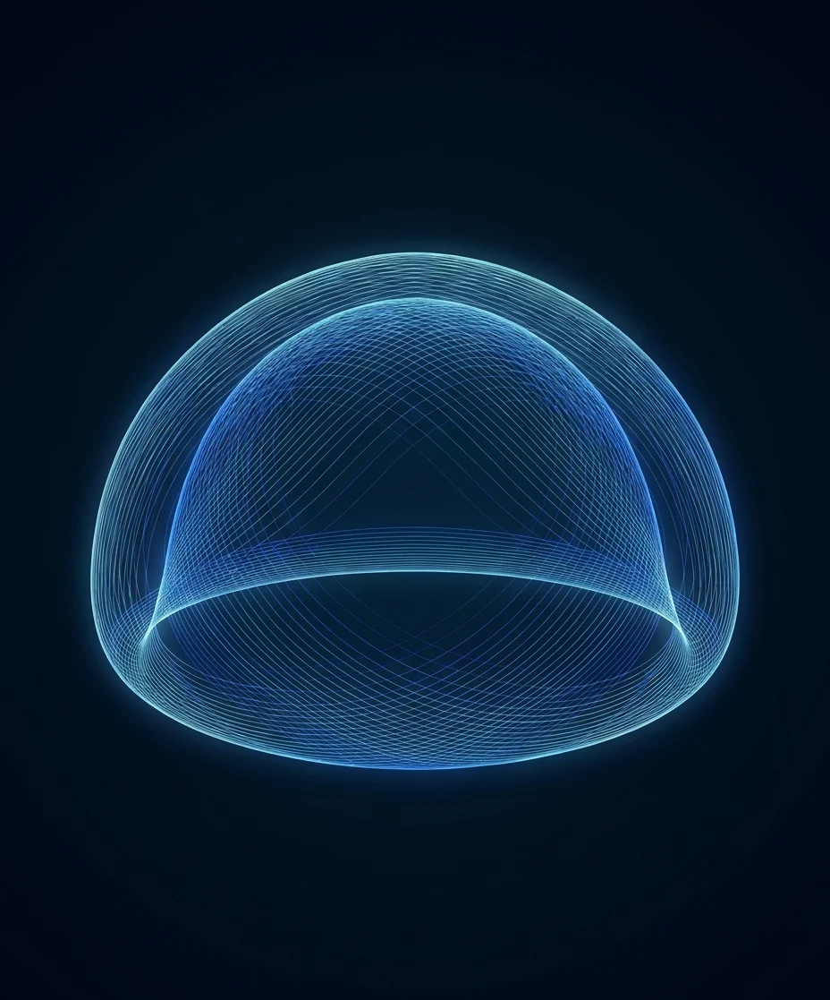

Up again at 3 a.m.?
It's fixable.
Waking once at night to urinate is ordinary. Waking two, three, four times, night after night, is nocturia, and it is one of the most common reasons men over 50 finally call a urologist. It is also one of the most fixable, once you know which of its causes is yours.

More than an annoyance
Broken sleep is the real cost. Every 3 a.m. trip fragments the deep sleep that daytime energy, mood, and memory depend on, and for older men the walk to a dark bathroom is a genuine fall risk. Men often tolerate years of it because each single night seems survivable. Added up, it is the single biggest quality-of-life complaint in prostate care, and the symptom men most often celebrate losing after treatment.
Prostate, or something else?
Nighttime urination has two main engines, and they are treated completely differently. The first is an enlarged prostate: the gland squeezes the urethra, the bladder never quite empties, and a half-full bladder reaches "full" again an hour after you lie down. The second is nocturnal polyuria, where the body simply makes too much of its urine overnight, because of evening fluids, alcohol, medication timing, sleep apnea, or fluid that pooled in the legs all day returning to circulation the moment you lie flat.
Many men have some of both. Getting the split right is the whole game, and it takes little more than a two-day bladder diary, a quick bladder scan, and an honest conversation.
The prostate engine
Weak stream, straining, and the feeling of never quite finishing during the day, plus frequent nights, point to obstruction. The bladder refills quickly because it never emptied. This is the pattern BPH treatment fixes.
The overnight-urine engine
Large-volume trips, ankle swelling by evening, snoring or apnea, an evening diuretic, or a nightcap all point to nocturnal polyuria. Habits, timing changes, and treating the underlying cause do more here than any prostate procedure.
The evaluation sorts it
A bladder diary, a symptom score, an ultrasound look at how much urine the bladder leaves behind, and a prostate measurement. One visit, no discomfort, and you leave knowing which engine is yours.
What you can try tonight
Fair warning: these help most when overnight urine production is the driver. When the prostate is the cause, they trim a trip, not the problem.
Front-load your fluids
Drink normally through the morning and afternoon, then taper after dinner rather than cutting fluids all day, which backfires.
Watch the evening irritants
Alcohol and caffeine both increase urine production and irritate the bladder. After mid-afternoon, they cost you at 3 a.m.
Put your feet up before dinner
An hour with legs elevated in the late afternoon moves pooled fluid back into circulation while you are still awake to deal with it.
Ask about medication timing
If you take a diuretic, taking it earlier in the day, with your prescriber's blessing, often moves those trips into daylight.
When the prostate is the cause
If the diary and the scan point to obstruction, the good news is that this is the fixable kind. Four modern treatments, PAE, UroLift, Rezūm, and Aquablation, relieve the blockage with far less disruption than traditional surgery, and better nights are typically among the first improvements men notice. Dr. Sawkar offers all four in one practice, so the recommendation follows your anatomy. If pills like Flomax have already stopped helping, you have more options than you think.
Common questions about waking at night
How many times a night is normal
Zero to one is typical. Waking twice or more, night after night, is worth an evaluation, especially if the trips leave you tired during the day. The medical threshold matters less than the bother: if it is disrupting your life, it counts.
Is it my prostate or something else
Often it is the prostate, but not always. An enlarged prostate keeps the bladder from emptying fully, so it refills fast. Separately, some men simply make more urine at night because of evening fluids, medication timing, sleep apnea, or fluid shifting out of the legs. A simple evaluation with a bladder diary tells the two apart, and the treatment differs.
Will treating my prostate stop the night trips
When obstruction is the driver, nighttime frequency is usually one of the first symptoms to improve after treatment. When overnight urine production is the bigger factor, prostate treatment alone will not fix it, which is exactly why the evaluation comes before any recommendation.
What can I try tonight
Shift most of your fluids earlier in the day, go easy on alcohol and caffeine after mid-afternoon, put your feet up for an hour in the late afternoon, and if you take a diuretic, ask your prescriber about timing it earlier. These help many men by one trip or so; they rarely fix the problem when the prostate is the cause.
When is waking at night urgent
Seek prompt care if you suddenly cannot urinate at all, see blood in your urine, have fever or burning, or have new pain in the lower belly or back. Those signs point beyond routine nocturia and should not wait.

Sleep through the night again
One visit tells you which engine is driving your nights, and what actually fixes it. Same-day and next-day appointments, telehealth available, Medicare and most PPO plans accepted. For the fastest response, send the office a secure message; the reply comes back by text.
Chief of Urology, Providence St. Joseph Hospital · UroLift Center of Excellence · Orange County's highest-volume Aquablation surgeon